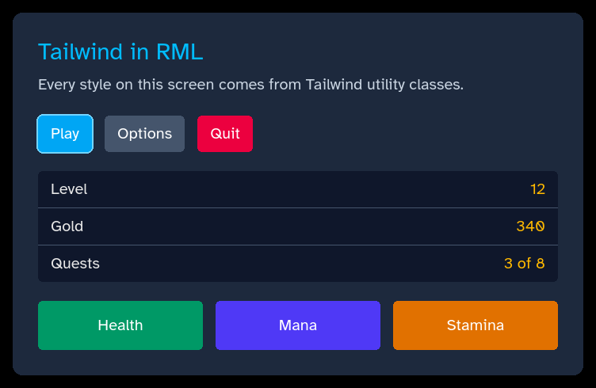

Tailwind CSS¶
To style a screen with Tailwind CSS 4, download Tailwind's standalone tool, run it on your documents to write one style sheet, and link that sheet in each document's head like any other. The plugin ships no Node and no Tailwind. The Tailwind sample is a screen written with utility classes only.

Get the tool¶
Download the standalone CLI for your platform from the latest release of the official tailwindlabs/tailwindcss
repository on GitHub, under Assets. For Windows it is
tailwindcss-windows-x64.exe
(direct download). It is one file that needs no Node and no install. Nothing adds it to PATH, so you run it by its
full path; leave it in your Downloads folder, where the browser saves it, and the command below finds it there.
The input file¶
Create tailwind.css next to your document. It is copied from the Tailwind sample:
/* Rebuild Tailwind.rcss: see "Build the sheet" in the Tailwind guide */
@import "tailwindcss" source(none);
@source "./Tailwind.rml";
@theme {
--font-sans: 'Arc Samples Sans';
--font-mono: 'Arc Samples Sans';
}
source(none)turns off Tailwind's automatic scan of your folders, so only the files named by@sourcecount.@sourcenames a.rmlfile whose classes Tailwind keeps. Add one@sourceline for each document that uses Tailwind classes.@themesets the two font families Tailwind's base styles use. No system font ships with a game, and afont-familythat no@font-facein your font sheets declares is an error of the validator. Use the family your project loads; the sample usesArc Samples Sans.
Build the sheet¶
Open PowerShell in the folder of tailwind.css (in File Explorer: right-click the folder, Open in Terminal) and run:
& "$HOME\Downloads\tailwindcss-windows-x64.exe" -i tailwind.css -o Tailwind.rcss
If you saved the file somewhere else, put its path between the quotes instead.
With Node installed, npx @tailwindcss/cli@4 -i tailwind.css -o Tailwind.rcss does the same. A bare
npx tailwindcss can run a Tailwind 3 installed in a parent folder, which stops with Failed to find 'tailwindcss'.
Tailwind.rcss appears next to tailwind.css. To see the screen in the picture above, choose
Tailwind in the samples list in the map L_ArcRmlSamples (Samples).
Name the output .rcss: a <link> loads only .rcss files. Link it in the head of the document, after the sheet
your project shares:
<link type="text/rcss" href="/ArcRmlUISamples/UI/Rml/Shared/Samples.rcss"/>
<link type="text/rcss" href="Tailwind.rcss"/>
Run the command again after you change classes in the document, or add --watch=always to rebuild the sheet on each save.
Known differences¶
What still differs from Chrome's layout:
- A label that wraps an input or a select is narrower than in Chrome.
- A modal's content sits a few pixels higher.
- Form-state variants (
disabled:,enabled:,checked:,required:,placeholder-shown:,read-only:,peer-checked:) do not all match Chrome. :has()(has-*), container queries (@container,@md:),zoom-*andopen:are not supported; see CSS support.
For what RML does differently from a browser, see Coming from HTML and CSS and CSS support.
What to do about the rest:
| What you see | Why | What to do |
|---|---|---|
| Warnings in the validator and in the log. | The default Tailwind v4 build validates with no warnings, so -WarningsAsErrors passes. A warning comes from your own CSS: a typo, an unknown pseudo-class without a vendor prefix or a value RML does not support. |
A warning at the rule of a class you use drops the declaration it names, and the class's other declarations still apply. Check that property in CSS support. |
font-bold text is drawn regular. |
The plugin does not synthesize bold; a browser does. | Ship a Bold face in your font sheet. |
| A focused button shows no outline unless you style it. | There is no browser default focus outline. | Style focus: yourself, as the sample's buttons do with focus:ring-2. |